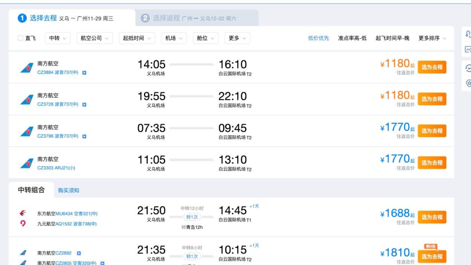
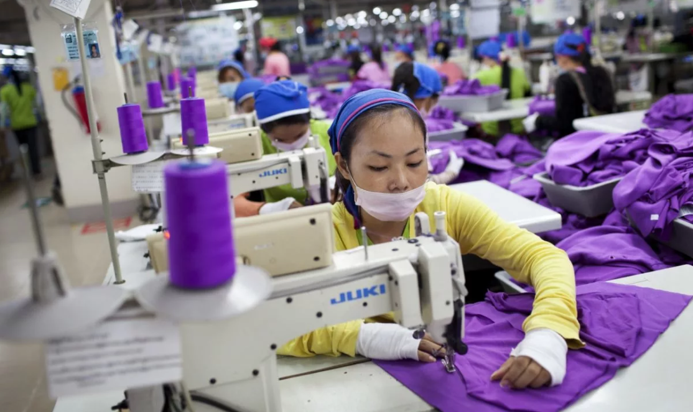
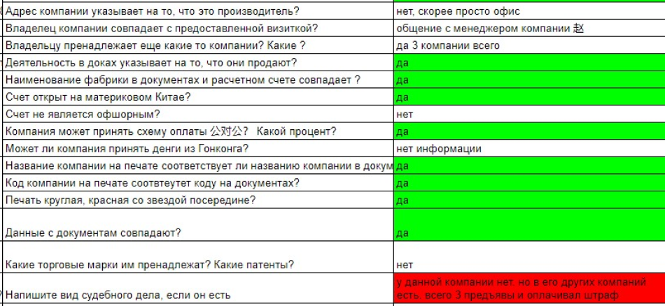

Проведем независимую оценку производителя или товара в Китае и предоставим подробный отчет с фото, документами, заключением эксперта
оставить заявку
Красивые сайты и обещания в WeChat — не гарантия надежности, честности и опытности поставщика. Есть тысячи историй, когда предприниматели терпели миллионные убытки — производители берут оплату и пропадают. Или обманывают на качестве, подделывают документы, срывают сроки и присылают откровенный брак.
Защититься от рисков поможет услуга ChinaToday «Аудит фабрики в Китае».
Красивые сайты и обещания в WeChat — не гарантия надежности, честности и опытности поставщика. Есть тысячи историй, когда предприниматели терпели миллионные убытки — производители берут оплату и пропадают. Или обманывают на качестве, подделывают документы, срывают сроки и присылают откровенный брак.
Защититься от рисков поможет услуга ChinaToday «Аудит фабрики в Китае».
Проверка китайского завода или фабрики даст вам полное представление о поставщике и поможет:
1. Понять, что вы общаетесь с реальным производителем,
а не с перекупом или мошенником.
2. Определить серьезность намерений поставщика
Отказ принять аудитора на производстве — это сразу красный флаг. Либо поставщик не заинтересован в сотрудничестве, либо ему есть что скрывать.
3. Узнать реальный размер производства и производственные мощности фабрики
Способна ли она производить товар в том объеме, в котором вам нужно.
4. Способна ли она производить товар в том объеме, в котором вам нужно.
Чтобы однажды не остаться без товара, нужно знать все об этапах производства и используемых комплектующих.
5. Решить, соответствует ли продукция вашему стандарту качества
Чтобы не столкнуться с ситуацией «ожидание — реальность» важно заранее посмотреть и пощупать образцы.
На фабрику выезжает наш сотрудник — русскоговорящий китаец. Он проверяет производство по чек-листу. Выясняет, какие этапы производства выполняются на фабрике, а какие — на сторонних предприятиях. Каким образом фабрика контролирует качество и как работает с браком.
Выбирайте вариант аудита производителя под свою задачу ↓
| Аудит удаленный | Аудит фактический + удаленный | Инспекция товара на фабрике | |
| Описание |
Удаленно проверяем профиль поставщика и все доступные данные о фабрике. Запрашиваем документы, оцениваем их подлинность. На фабрику не выезжаем. |
Аудитор собирает данные удаленно, заполняет отчет. Далее аудитор лично посещает фабрику и проверяет все на месте. Фактический аудит проводится в Иу, Нинбо, Шанхае, провинциях Чжэцзян, Гуанчжоу, Шенчжень. |
Проверка товара в Китае на соответствие спецификации. Возможна инспекция на любом этапе производства. |
| Что проверяем |
|
|
Товар на соответствие требованиям спецификации:
Если производство еще в процессе, проверим:
|
| Результат |
|
|
|
| Цена | 5 тыс. рублей | Иу, Нинбо — 300 $ Шанхай, провинция Чжэцзян, Гуанчжоу, Шэньчжэнь — 300 $ + перелет* |
Иу, Нинбо — 200 $ Шанхай, провинция Чжэцзян, Гуанчжоу, Шэньчжэнь — 200 $ + перелет* |
| Сроки | 5 рабочих дней | 7 рабочих дней | 3 рабочих дня |
*Перелет сотрудника из Иу в город, где находится фабрика, оплачивает клиент. Для примера: стоимость билетов туда обратно Иу-Гуанчжоу на ноябрь 2023 года — 1180 юаней (~16 тыс. рублей).
Пример 1. Клиент занимается продажей запорной арматуры. Самостоятельно вышел на поставщика, который предложил хорошую цену на товар, а нас попросил провести аудит фабрики и инспекцию товара. Выяснили, что на заводе свое литейное производство (они сами делают пресс-формы и преформы), цеха ковки, отливки, механической обработки, сборки и покраски и очень хорошо налажена работа ОТК. Товар качественный, а образцы идентичны продукции в цехах. По результатам проверки мы рекомендовали клиенту этого производителя.
Пример 2. К нам обратился клиент с запросом на проверку фабрики по производству сценического оборудования. Собрали всю информацию о поставщике и посетили саму фабрику. Менеджер фабрики предоставил все документы, компания ничего не скрывает. Был лишь один спорный момент: компании две и торговая марка зарегистрирована на одну из компаний. Но проверили, что владелец компании и ТМ — один человек, значит, компании можно доверять.
Фрагмент отчета аудитора ↓
Пример 3. Клиент заказал удаленный аудит производителя электроники, планировал закупить у него большую партию чипов. По результатам проверки мы категорически не советовали клиенту сотрудничать с этим поставщиком:
Фрагмент отчета о проверке ↓
Оставляете предварительную заявку
Расскажите о задаче: какого поставщика надо проверить, какие дополнительные вопросы задать, какой товар проинспектировать.
Изучаем запрос
Подтверждаем возможность инспекции или аудита.
Проводим удаленный аудит
По шаблону и формируем отчет.
Договариваемся с фабрикой о визите
Сообщаем вам дату и детали.
Делаем итоговый отчет по проверке
Добавляем заключение аудитора и направляем вам результаты.
Посещаем фабрику
И проводим аудит.
Услуги аудита и инспекции заключаются непосредственно в проверках. То есть, в рамках услуг аудитор не выясняет отношения с фабриками, не проводит переговоры о качестве, не требует заменить товар. Если для решения вашей задачи требуются дополнительные переговоры с фабрикой (сторговать цену, сравнить цены с аналогичными, решить вопросы с браком и пр.) — скажите об этом → предложим решение.
Мы заключаем с вами договор на оказание услуг, по которому несем ответственность за результат. Не сможем выполнить обязательства → вернем деньги.
Оставьте заявку, менеджер перезвонит в течение рабочего дня. Подробно изучит задачу, скажет точную стоимость и сроки выполнения. А далее — проведем аудит китайской фабрики под ваш запрос и поможем наладить выгодные закупки напрямую от лучших производителей из Китая.